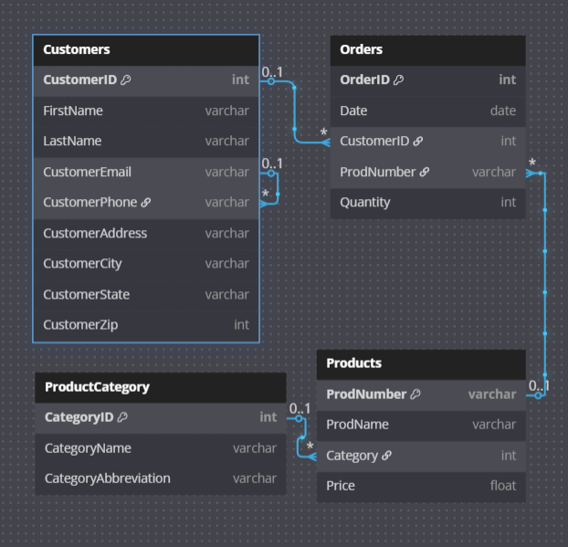
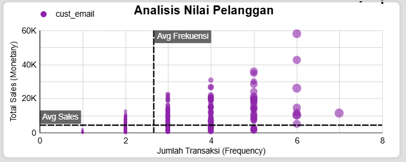

Konteks & Tujuan Proyek
Sebagai BI Analyst, saya dihadapkan pada tantangan di mana data penjualan PT Sejahtera Bersama terfragmentasi di empat sumber data yang terisolasi (Customers, Orders, Products, ProductCategory). Hal ini menghambat manajemen dalam mendapatkan gambaran utuh tentang kinerja bisnis. Tujuan proyek ini adalah mentransformasi data mentah tersebut menjadi sebuah ekosistem analitik terintegrasi untuk mendorong pertumbuhan penjualan.
Desain Data & Proses ETL
Langkah pertama adalah merancang skema data yang logis untuk menghubungkan semua sumber data. Kunci utama (Primary Key) dan relasi antar tabel didefinisikan untuk memastikan integritas data. Selanjutnya, proses ETL dilakukan untuk menyatukan keempat tabel sumber menjadi satu tabel master sebagai "Single Source of Truth" untuk analisis.
Hasil: Dashboard Analisis Kinerja Penjualan Interaktif
Saya mengembangkan sebuah dashboard Business Intelligence interaktif yang dirancang untuk mengubah data kompleks menjadi wawasan visual yang cepat dan mudah dipahami. Dashboard ini dilengkapi dengan ringkasan KPI, analisis performa berdasarkan kategori dan kota, serta filter interaktif. Silakan coba filter yang ada di dashboard di bawah ini.
Analisis Mendalam: Segmentasi Pelanggan (RFM)
Salah satu wawasan kunci dari dashboard adalah analisis segmentasi pelanggan menggunakan model RFM (Recency, Frequency, Monetary). Analisis ini mengungkapkan bahwa pelanggan tidak seragam dan dapat dikelompokkan menjadi segmen-segmen strategis:
- Champions (Kanan Atas): Pelanggan paling berharga yang sering membeli dengan nilai transaksi tinggi.
- Big Spenders (Kiri Atas): Jarang membeli, namun sekali membeli nilainya sangat tinggi.
- Loyal Customers (Kanan Bawah): Sering membeli, namun nilai transaksinya rendah.
Temuan ini memungkinkan perusahaan beralih dari strategi "satu untuk semua" ke pemasaran berbasis segmen yang lebih efektif, seperti program VIP untuk Champions dan upsell untuk Loyal Customers.
Kesimpulan & Rekomendasi
Meskipun memiliki fondasi produk yang kuat, fokus perusahaan harus beralih dari akuisisi ke optimalisasi nilai pelanggan. Kunci utamanya adalah menerapkan pemasaran berbasis segmen dan mereplikasi strategi yang sukses di wilayah-wilayah dominan ke area lain yang memiliki potensi pertumbuhan.